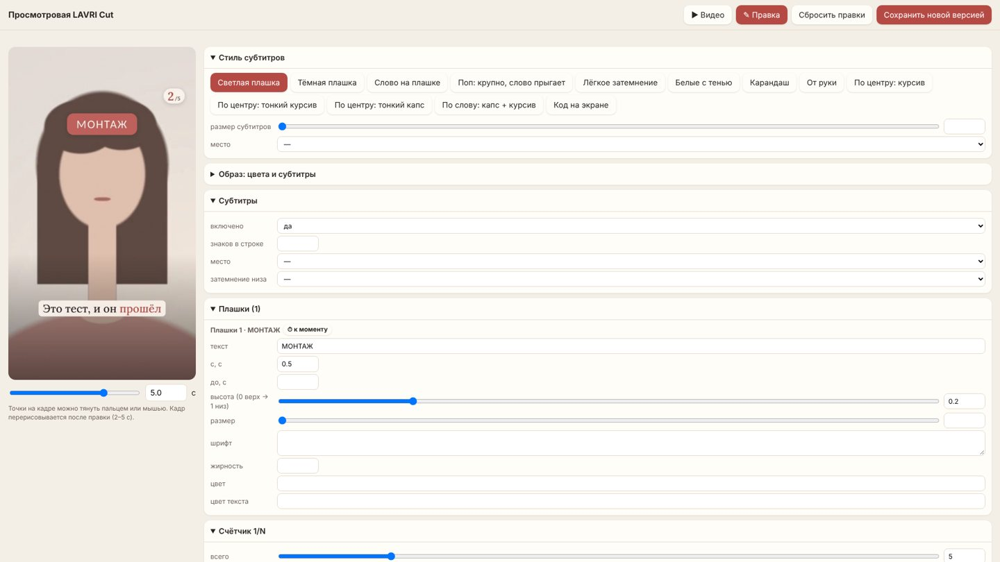
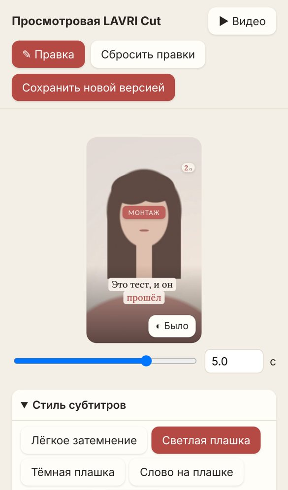

ПЕРЕД НАЧАЛОМ
ЧТО ВНУТРИ АГЕНТА
LAVRI Cut — это не промт, а готовый агент. В нём методика монтажа, по которой работает LAVRI LOOK: правила, проверенные приёмы и инструменты. Claude не собирает монтажёра с нуля, он сразу работает по готовой системе.
- Чистовой исходник: убирает шум, паузы, «эээ», повторы и дубли. Перед монтажом показывает таблицу «оставить / вырезать», решаете вы.
- Субтитры: 13 стилей — от спокойных до «по слову». Субтитры не закрывают лицо и не уходят под кнопки Instagram.
- Графика: плашки, счётчик «1/5», цифры, списки, карточки, переписка, таймер, оценка 10/10, доска, разбор с рисунком.
- Звук: 48 звуковых эффектов, музыка уступает голосу, громкость под Reels.
- Образ: цвета и пары шрифтов с лицензией для роликов. Ваш стиль сохраняется для следующих видео.
- Обложки и карусели в том же стиле.
- Тройная приёмка: агент не назовёт ролик готовым, пока не проверит звук, чёрные кадры, синхрон и безопасную зону.
Агент учится на ваших роликах: удачные приёмы и ваши правки он записывает и повторяет в следующих видео.
ШАГИ 1–4
УСТАНОВКА НА КОМПЬЮТЕР
Понадобится: компьютер Mac или Windows, приложение Claude с вкладкой Code (платный тариф Pro или Max), около 5 ГБ свободного места и 20–30 минут на первую установку.
1. Создайте папку и положите в неё архив
Создайте папку LAVRI Cut (например, в «Документах»). Положите в неё архив, который пришлёт бот после оплаты. Распаковывать вручную не обязательно — агент сделает это сам.

2. Откройте папку в Claude Code
Откройте приложение Claude → Code → выберите Local / «Этот компьютер» → укажите папку LAVRI Cut. Вид приложения может немного отличаться.

3. Вставьте промт установки
Скопируйте промт и отправьте его в этот чат. Агент проверит компьютер, поставит недостающие программы и соберёт демо-ролик. Если ему понадобится ваше подтверждение (например, пароль от компьютера в системном окне), он скажет, что сделать, одной фразой.
Ты — мой монтажный агент LAVRI Cut. Работай только в этой папке. 1. Если здесь лежит zip-архив LAVRI Cut и папка ещё не распакована — распакуй его содержимое прямо в эту папку (без лишней вложенной папки). Прочитай CLAUDE.md и работай по нему. 2. Подготовь всё сам: определи систему (Mac или Windows), проверь Node.js 20+, FFmpeg и Python 3. Чего нет — установи по подсказкам npm run doctor. Системную установку делай только после моего «да»; пароль я ввожу в окне системы, не в чате. Не обновляй систему и не ставь платные сервисы. 3. Выполни npm install, затем npm run setup:python, затем npm run doctor. 4. Запусти npm run demo. Покажи мне результат приёмки и открой демо-ролик (или скажи, где он лежит). Ничего не удаляй и не перезаписывай в папках input/ и assets/. Отвечай по-русски, коротко и без технических подробностей. Если нужно моё действие — назови одно конкретное действие и жди.
4. Проверьте демо-ролик
Когда агент напишет «✅ Готово и проверено», откройте демо-ролик со звуком. Это значит, что всё установлено: распознавание речи, монтаж, звуки и приёмка.

Установка делается один раз. В следующий раз просто откройте папку LAVRI Cut в Claude Code — агент вспомнит правила и ваш стиль.
ШАГ 5
ПЕРВЫЙ РОЛИК
Создайте в папке input папку для ролика латиницей, например reel-01, и положите туда видео. Картинки и музыку для этого ролика — в assets/reel-01. Потом напишите агенту:
Я положила видео в input/reel-01. Смонтируй вертикальный рилс по правилам CLAUDE.md. Тема: … Для кого: … Призыв в конце: … Сначала покажи бриф. Дальше останавливайся там, где нужно моё решение.
Агент работает по шагам и останавливается в важных местах — на стоп-кадрах:
- Бриф: тема, хук, призыв, длина. Вы подтверждаете.
- Шум «до / после»: 12 секунд, вы слушаете и выбираете.
- Таблица «оставить / вырезать»: паузы, заминки, дубли. Решаете вы.
- Превью: черновик с субтитрами, плашками и звуком. Правки словами или в редакторе.
- Финал: только после вашего «да». Затем приёмка и готовый файл в папке final.

Следующий ролик
Новая папка в input (reel-02, reel-03…) и та же фраза. Ваш образ и выводы прошлых роликов агент применит сам.
ПРАВКИ
КАК ПОПРОСИТЬ ПРАВКУ
Пишите обычными словами и называйте время в ролике. Агент сделает новую версию и не затрёт прошлую — к любой можно вернуться.
На 0:06 субтитры крупнее и выше. С 0:12 до 0:15 вставь мою картинку assets/reel-01/foto.jpg. Плашку «МОНТАЖ» убери, вместо неё счётчик 2/5. Музыка перекрывает голос на 0:20 — сделай тише. Верни фразу про цену целиком — склейка меняет смысл.
Каждый раз агент предлагает выбор: скажите правку словами — или откройте редактор и поправьте сами.
РЕДАКТОР
ПРАВКА ПАЛЬЦЕМ И МЫШКОЙ
Напишите агенту «Открой редактор». Откроется окно с кадром ролика и всеми элементами: субтитры, плашки, счётчик, наклон горизонта, крупность спикера. Двигайте плашки прямо на кадре, меняйте текст, размер и время, выбирайте стиль субтитров в один клик. Кнопка «Сохранить новой версией» — и агент соберёт новое превью.



ВОЗМОЖНОСТИ
ЗВУКИ, ШРИФТЫ, РАСПАКОВКА БЛОГА
Звуковые эффекты
48 звуков в папке assets/sfx: переходы, щелчки, удары, реакции, печать. Агент сам ставит звук на склейку и на появление плашки. Смысловые звуки — реакцию, удар на цифре, нарастание — он предлагает таблицей «время · звук · зачем» и ставит только после вашего «да».
Шрифты и образ
Шрифты в папке fonts — с открытой или бесплатной коммерческой лицензией, их можно использовать в рекламе и на заказ. Попросите: «Давай настроим мой образ» и приложите 3–5 примеров. Агент подберёт цвета и пару шрифтов, покажет лист-образец и сохранит стиль.
Распаковка блога
Без этого агент пишет хуки и подписи «как принято в нише». С распаковкой — словами вашей аудитории. Напишите: «Распакуй меня». Агент пришлёт 2 промта для обычного чата Claude: «Профиль аудитории» и «Метод и табу», около 40 минут. Готовые документы верните агенту с фразой «Сохрани распаковку».
Обновления
Новые приёмы выходят обновлениями: архив и промт обновления. Ваши ролики, образ и правила при обновлении сохраняются.
ПОМОЩЬ
ЕСЛИ НЕ ПОЛУЧИЛОСЬ
Сначала напишите агенту, на каком шаге остановились, и пришлите текст ошибки. Попросите объяснить простыми словами, что делать. Частые случаи:
| Что видите | Что сделать |
|---|---|
| Нет вкладки Code | Code доступен на платном тарифе (Pro, Max). Обновите приложение Claude. |
| Агент говорит, что не может запускать команды или читать файлы | Выбран не тот режим. Code → Local / «Этот компьютер» → папка LAVRI Cut, новый чат. |
| «FFmpeg не найден», «Python не найден» | Скажите агенту «Установи сам». Mac: через Homebrew, Windows: через winget. Пароль — в окне системы. |
| Не скачивается модель распознавания речи | Проверьте интернет и повторите: «Выполни npm run setup:python ещё раз». |
| Мало места на диске | Нужно около 5 ГБ. Удалите старые превью в папке previews (не в input!). |
| Ролик без звука или звук отстаёт | «Проверь приёмку ролика» — агент покажет громкость и сдвиг звука и исправит. |
| Закончились лимиты Claude | Работа не теряется: продолжите позже в той же папке, агент начнёт с последнего шага. |
| Агент делает что-то не то | «Стоп. Верни, как было» — старые версии он не затирает. |
Не получилось за 2–3 попытки
Напишите в поддержку — Telegram @lavri_ai. Пришлите шаг и текст ошибки (скриншот).
ВАРИАНТ ДЛЯ ТЕЛЕФОНА
ОБЛАКО И ТЕЛЕФОН
Этот гайд — про агента на компьютере: всё лежит в вашей папке, ничего не теряется. Если хотите монтировать и с телефона, и с компьютера, агента ставят в облако Claude: отдельный репозиторий, рабочая среда, домены и коннекторы.
Компьютер
Сами по этому гайду. Ролики, звуки и шрифты лежат в папке на компьютере.
Облако + телефон
Настройка вместе на консультации: монтаж с любого устройства, редактор на телефоне.
Хотите облачный вариант — напишите @lavri_ai.
ДОСТУП
ПОЛУЧИТЬ АГЕНТА
Архив LAVRI Cut выдаётся через бот. После оплаты бот пришлёт архив и ссылку на этот гайд. Архив — именной экземпляр авторской методики LAVRI: передавать и перепродавать его третьим лицам нельзя.
Получить архив LAVRI Cut →